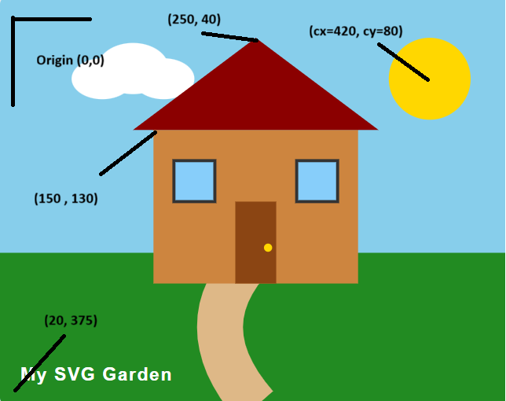

Exercise 4.1: SVG House and Garden
Step 1: Create a picture with SVG shapes
This drawing uses SVG primitives, paths, and groups to demonstrate coordinate mapping in the browser.
Step 2: Coordinate System Annotation
The screenshot below demonstrates how SVG coordinates map to the browser, with the origin (0, 0) located at the top-left of the SVG container.

Coordinate Reference Table
A breakdown of how different SVG shapes position themselves relative to the (0,0) origin.
| Element | SVG Shape | Coordinate Type | X Coordinate | Y Coordinate |
|---|---|---|---|---|
| Canvas Origin | Viewport | Top-Left Corner | 0 | 0 |
| House Base | <rect> |
Top-Left Corner (x, y) | 150 | 130 |
| Roof Peak | <path> |
Start/Move Point (M) | 250 | 40 |
| Sun | <circle> |
Center Point (cx, cy) | 420 | 80 |
| Title Text | <text> |
Baseline Start (x, y) | 20 | 375 |